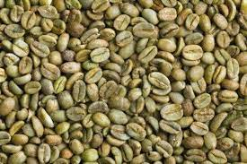
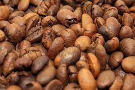
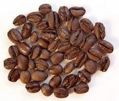

COFFEE ORGINS
"Coffee grown worldwide can trace its heritage back centuries to the ancient coffee forests on the Ethiopian plateau. There, legend says the goat herder Kaldi first discovered the potential of these beloved beans.
The story goes that that Kaldi discovered coffee after he noticed that after eating the berries from a certain tree, his goats became so energetic that they did not want to sleep at night.
Kaldi reported his findings to the abbot of the local monastery, who made a drink with the berries and found that it kept him alert through the long hours of evening prayer. The abbot shared his discovery with the other monks at the monastery, and knowledge of the energizing berries began to spread.
As word moved east and coffee reached the Arabian peninsula, it began a journey which would bring these beans across the globe."
BLACK COFFEE

Black coffee is a beverage made from roasted coffee beans. The beans are ground and soaked in water,
which releases their flavor, color, caffeine content, and nutrients.read more
ARABICA

Arabic coffee is made from lightly roasted coffee beans infused with a mix of fragrant spices like
cardamom, ginger, cloves, and saffron.read more
ROBUSTA
robusta tend to have lower acidity, more bitterness, and a more woody and less fruity flavor compared to
arabica beans.read more
LIBERICA

They are larger than the other beans and is the only one in the world that is known to irregular
shape,beans are also unique in their aroma and some say that they are not only smoky,they are fruity and
floral too.read more
EXCELSA

Excelsa has a distinctive tart, fruity, dark, mysterious taste. In blends, it enhances the middle and
back palate and lingering finish of the coffee, giving the cup more substance and power.read more